Synapter.RdA reference class to store, manage and process Synapt G2 data to combine identification and quantitation results.
The data, intermediate and final results are stored together in such a ad-how container called a class. In the frame of the analysis of a set of 3 or 5 data files, namely as identification peptide, a quantitation peptide and a quantitation Pep3D, and identification fragments and quantitation spectra, such a container is created and populated, updated according to the user's instructions and used to display and export results.
The functionality of the synapter package implemented in the
Synapter class in described in the Details section
below. Documentation for the individual methods is provided in the
Methods section. Finally, a complete example of an analysis is
provided in the Examples section, at the end of this document.
See also papers by Shliaha et al. for details about ion mobility
separation and the manuscript describing the synapter
methodology.
Synapter(filenames, master) ## creates an instance of class 'Synapter'
| filenames | A named |
|---|---|
| master | A |
A Synapter object logs every operation that is applied to
it. When displayed with show or when the name of the instance
is typed at the R console, the original input file names, all
operations and resulting the size of the respective data are
displayed. This allows the user to trace the effect of respective
operations.
Synapter, is created
with the Synapter constructor.
This function requires 4 or 6 files as input, namely,
the identification final peptide csv file, the quantitation final peptide
csv file, the quantitation Pep3D csv file (as exported from the PLGS
software), the fasta file use for peptide identification, and optional
the identification fragments csv file and the quantitation
spectra xml file. The fasta file ('fasta') could be an RDS file generated by
link{createUniquePeptideDbRds}, too.
The file names need to be specified as a named list with names
'identpeptide', 'quantpeptide', 'quantpep3d', 'fasta', 'identfragments'
and 'quantspectra' respectively.
These files are read and the data is stored in the newly
created Synapter instance.
The final peptide files are filtered
to retain peptides with matchType corresponding to
PepFrag1 and PepFrag2, corresponding to unmodified
round 1 and 2 peptide identification. Other types, like
NeutralLoss_NH3, NeutralLoss_H20, InSource,
MissedCleavage or VarMod are not considered in the rest
of the analysis. The quantitation Pep3D data is filtered to retain
Function equal to 1 and unique quantitation spectrum ids,
i.e. unique entries for multiple charge states or isotopes of an EMRT
(exact mass-retention time features).
Then, p-values for Regular peptides are computed based on
the Regular and Random database types score
distributions, as described in Käll et al.,
2008a. Only unique peptide sequences are taken into account:
in case of duplicated peptides, only one entry is kept.
Empirical p-values are adjusted using Bonferroni
and Benjamini and Hochberg, 1995 (multtest package)
and q-values are computed using the qvalue package
(Storey JD and Tibshirani R., 2003 and Käll et
al., 2008b). Only Regular entries are stored in the
resulting data for subsequent analysis.
The data tables can be exported as csv spreadsheets with the
writeIdentPeptides and writeQuantPeptides methods.
filterQuantPepScore and filterIdentPepScore
methods. Several plots are provided to illustrate peptide score
densities (from which p-values are estimated, plotPepScores;
use getPepNumbers to see how many peptides were available) and
q-values (plotFdr).
Peptides matching to multiple proteins in the fasta file (non-unique
tryptic identification and quantitation peptides) can be
discarded with the filterUniqueDbPeptides method. One can
also filter on the peptide length using filterPeptideLength.
Another filtering criterion is mass accuracy. Error tolerance
quantiles (in ppm, parts per million) can be visualised with the
plotPpmError method. The values can be retrieved with
getPpmErrorQs. Filtering is then done separately for
identification and quantitation peptide data using
filterIdentPpmError and filterQuantPpmError
respectively. The previous plotting functions can be used again to
visualise the resulting distribution.
Filtering can also be performed at the level of protein false
positive rate, as computed by the PLGS application
(protein.falsePositiveRate column), which counts the
percentage of decoy proteins that have been identified prior to the
regular protein of interest. This can be done with the
filterIdentProtFpr and filterQuantProtFpr methods.
Note that this field is erroneously called a false positive rate in
the PLGS software and the associated manuscript; it is a false
discovery rate.
mergePeptides method.
loess function for
details), using the modelRt method. The smoothing parameter,
or number of neighbour data points used the for local fit, is
controlled by the span parameter that can be set in the above
method.
The effect of this parameter can be observed with the plotRt
method, specifying what = "data" as parameters. The resulting
model can then be visualised with the above method specifying
what = "model", specifying up to 3 number of standard
deviations to plot. A histogram of retention time differences can
be produced with the plotRtDiffs method.
To visualise the feature space plotFeatures could be used. It
generates one or two (if ion mobility is available) plots of
retention time vs mass and mass vs ion mobility for each data source,
namely, Identification data, Quantitation data and Quantitation Pep3D data.
loess function for
details), using the modelIntensity method. The smoothing parameter,
or number of neighbour data points used the for local fit, is
controlled by the span parameter that can be set in the above
method.
The effect of this parameter can be observed with the plotIntensity
method, specifying what = "data" as parameters. The resulting
model can then be visualised with the above method specifying
what = "model", specifying up to 3 number of standard
deviations to plot.
prcntTotal),
(2) the percentage of identification peptides used in the retention time
model that matched the quantitation EMRT corresponding to the
correct quantitation peptide in ident/quant pair of the model
(called prcntModel)
and
(3) the detailed about the matching of the features used for
modelling (accessible with getGridDetails) and the
corresponding details grid that reports the percentage of
correct unique assignments.
The detailed grid results specify the number of non
matched identification peptides (0), the number of correctly (1) or
wrongly (-1) uniquely matched identification peptides, the number of
identification peptides that matched 2 or more peptides including
(2+) or excluding (2-) the correct quantitation equivalent are also
available.
See the next section for additional details about how matching.
The search is performed with the searchGrid method, possibly
on a subset of the data (see Methods and Examples sections for
further details).
The parameters used for matching can be set manually with
setPpmError, setRtNsd, setImDiff respectively,
or using setBestGridParams to apply best parameters as defined using
the grid search. See example and method documentation for details.
plotEMRTtable (or
getEMRTtable to retrieve the values) and performace
methods. The former shows the number of identification peptides assigned to
none (0), exactly 1 (1) or more (> 2) EMRTs.
The latter method reports matched identification peptides, the number of
(q-value and protein FPR filtered) identification and quantitation peptides.
Matched EMRT and quantitation peptide numbers are then compared
calculating the synapter enrichment (100 * ( synapter - quant ) / quant)
and Venn counts.
plotCumulativeNumberOfFragments to
plot the number of fragments vs the intensity and to find a good threshold.
The filterFragments method could remove peaks if the intensity is
below a specified threshold via the minIntensity argument. Set the
maxNumber argument to keep only the maxNumber highest
peaks/fragments. The what argument controls the data on which the
filter is applied. Use what = "fragments.ident" for the
identification fragments and what = "spectra.quant" for the
quantiation spectra data.
fragmentMatching method.
Use setFragmentMatchingPpmTolerance to set
the maximal allowed tolerance for considering a peak as identical.
There are two different methods to visualise the results of the fragment
matching procedure. plotFragmentMatching plots the fragments and
spectra for each considered pair.
plotFragmentMatchingPerformance draws two plots. On the left panel
you could see the performance of different thresholds for the number of
common peaks for unique matches. The right panel visualizes the performance
of different differences (delta) of common peaks between the best match
(highest number of common peaks) and the second best match in each non
unique match group. plotFragmentMatchingPerformance returns the
corresponding values invisible or use fragmentMatchingPerformance to
access these data.
Use filterUniqueMatches and filterNonUniqueMatches to remove
unique or non unique matches below the threshold of common peaks
respective the difference in common peaks from the MatchedEMRTs data.frame.
writeMergedPeptides method. Similarly, the
matched identification peptides and quantitation EMRTs are exported
with writeMatchedEMRTs.
Complete Synapter instances can be serialised with
save, as any R object, and reloaded with load for
further analysis.
It is possible to get the fragment and spectra data from the identification
and quantitation run using getIdentificationFragments respectively
getQuantitationSpectra.
signature(object = "Synapter"): Merges
quantitation and identification final peptide data, used to
perform retention time modelling (see modelRt below).
signature(object = "Synapter",
span = "numeric"): Performs local polynomial regression
fitting (see loess) retention time alignment using
span parameter value to control the degree of smoothing.
signature(object = "Synapter",
span = "numeric"): Performs local polynomial regression
fitting (see loess) intensity values using
span parameter value to control the degree of smoothing.
signature(object = "Synapter", ppm =
"numeric", nsd = "numeric", imdiff = "numeric"):
Finds EMRTs matching identification peptides using ppm
mass tolerance, nsd number of retention time standard
deviations and imdiff difference in ion mobility.
The last three parameters are optional if previously
set with setPpmError, setRtNsd, setImDiff,
or, better, setBestGridParams (see below).
signature(object = "Synapter",
method = c("rescue", "copy")):
The method parameter defined the behaviour for those
high confidence features that where identified in both identification and
quantitation acquisitions and used for the retention time model
(see mergePeptides). Prior to version 1.1.1, these
features were transferred from the quantitation pep3d file if
unique matches were found, as any feature ("transfer").
As a result, those matching 0 or > 1 EMRTs were
quantified as NA. The default is now to "rescue"
the quantitation values of these by directly retrieving the data
from the quantification peptide data. Alternatively, the
quantitation values for these features can be directly taken
from the quantitation peptide data using "copy", thus
effectively bypassing identification transfer.
signature(object="Synapter",
ppms="numeric", nsds="numeric", imdiffs = "numeric",
subset="numeric", n = "numeric", verbose="logical"):
Performs a grid search. The
grid is defined by the ppm, nsd and imdiffs
numerical vectors, representing the sequence of values to be
tested. Default are seq(5, 20, 2), seq(0.5, 5,
0.5), seq(0.2, 2, 0.2) respectively. To ignore ion mobility set
imdiffs = Inf.
subset and n allow to use a
randomly chosen subset of the data for the grid search to
reduce search time. subset is a numeric, between 0 and 1,
describing the percentage of data to be used; n specifies
the absolute number of feature to use. The default is to use all
data. verbose controls whether textual output should be
printed to the console. (Note, the mergedEMRTs value used
in internal calls to findEMRTs is "transfer" - see
findEMRTs for details).
signature(object="Synapter",
ppm = "numeric", verbose = "logical":
Performs a fragment matching between spectra and fragment data.
The ppm argument controls the tolerance that is used to consider
two peaks (MZ values) as identical. If verbose is TRUE
(default) a progress bar is shown.
signature(object = "Synapter"): Display
object by printing a summary to the console.
signature(x="Synapter"): Returns a list
of dimensions for the identification peptide, quantitation
peptide, merged peptides and matched features data sets.
signature(object="Synapter"): Returns a
character of length 6 with the names of the input files
used as identpeptide, quantpeptide,
quantpep3d, fasta, identfragments and
quantspectra.
signature(object="Synapter"): Returns a
character of variable length with a summary of processing
undergone by object.
signature(object="Synapter", digits =
"numeric"): Returns a named list of length 3 with the
precent of total (prcntTotal), percent of model
(prcntModel) and detailed (details) grid search
results. The details grid search reports the proportion
of correctly assigned features (+1) to all unique assignments
(+1 and -1). Values are rounded to 3 digits by default.
signature(object="Synapter"): Returns
a list of number of ..., -2, -1, 0, +1, +2, ... results
found for each of the ppm/nsd pairs tested during
the grid search.
signature(object="Synapter"):
Returns a named numeric of length 3 with best grid values
for the 3 searches. Names are prcntTotal,
prcntModel and details.
signature(object="Synapter"):
Returns a named list of matrices (prcntTotal,
prcntModel and details). Each matrix gives the
ppm and nsd pairs that yielded the best grid
values (see getBestGridValue above).
signature(object="Synapter",
what="character"): This methods set the best parameter pair,
as determined by what. Possible values are auto
(default), model, total and details. The 3
last ones use the (first) best parameter values as reported by
getBestGridParams. auto uses the best model
parameters and, if several best pairs exists, the one that
maximises details is selected.
signature(object="Synapter", fdr =
"numeric"): Sets the peptide score false discovery rate
(default is 0.01) threshold used by filterQuantPepScore
and filterIdentPepScore.
signature(object="Synapter"): Returns
the peptide false discrovery rate threshold.
signature(object="Synapter", ppm =
"numeric"): Set the identification mass tolerance to
ppm (default 10).
signature(object="Synapter"):
Returns the identification mass tolerance.
signature(object="Synapter", ppm =
"numeric"): Set the quantitation mass tolerance to ppm
(default 10).
signature(object="Synapter"):
Returns the quantitation mass tolerance.
signature(object="Synapter", ppm =
"numeric"): Sets the identification and quantitation mass
tolerance ppm (default is 10).
signature(object="Synapter", span =
"numeric"): Sets the loess span parameter;
default is 0.05.
signature(object="Synapter"): Returns
the span parameter value.
signature(object="Synapter", nsd =
"numeric"): Sets the retention time tolerance nsd,
default is 2.
signature(object="Synapter"): Returns the
value of the retention time tolerance nsd.
signature(object="Synapter", imdiff =
"numeric"): Sets the ion mobility tolerance imdiff,
default is 0.5.
signature(object="Synapter"): Returns the
value of the ion mobility tolerance imdiff.
signature(object="Synapter", qs =
"numeric", digits = "numeric"): Returns the mass tolerance
qs quantiles (default is c(0.25, 0.5, 0.75, seq(0.9,
1, 0.01)) for the identification and quantitation
peptides. Default is 3 digits.
signature(object="Synapter", qs =
"numeric", digits = "numeric"): Returns the retention time
tolerance qs quantiles (default is c(0.25, 0.5,
0.75, seq(0.9, 1, 0.01)) for the identification and
quantitation peptides. Default is 3 digits.
signature(object="Synapter"): Returns
the number of regular and random quantitation and identification
peptide considered for p-value calculation and used to plot the
score densities (see plotPepScores). Especially the
difference between random and regular entries are informative in
respect with the confidence of the random scores distribution.
signature(object="Synapter",
ppm = "numeric"): Sets the fragment matching mass tolerance ppm
(default is 25).
signature(object="Synapter"):
Returns the fragment matching mass tolerance in ppm.
signature(object="Synapter", k =
"numeric"): Returns a named list of length
2 with the proportion of identification and quantitation
peptides that are considered significant with a threshold of
k (default is c(0.001, 0.01, 0.5, 0.1)) using raw
and adjusted p-values/q-values.
signature(object="Synapter"): Returns a
table with the number of 0, 1, 2, ... assigned EMRTs.
signatute(object="Synapter", verbose =
TRUE): Returns (and displays, if verbose) the
performance of the synapter analysis.
signatute(object="Synapter", verbose =
TRUE): Returns (and displays, if verbose) information
about number of missing values and identification source of
transfered EMRTs.
signature(object="Synapter",
what = c("unique", "non-unique"):
Returns the performance of the fragment matching for unqiue or
non-unique matches. The return valus is a matrix with
seven columns. The first column ncommon/deltacommon
contains the thresholds. Column 2 to 5 are the true positives tp,
false positives fp, true negatives tn, false negatives
fn for the merged peptide data. The sixth column all shows
the corresponding number of peptides for all peptides
(not just the merged ones) and the last column shows the FDR fdr
for the current threshold (in that row) for the merged data.
Please note that the FDR is overfitted/underestimated because the merged
peptides are the peptides from the highest quality spectra were PLGS could
easily identify the peptides. The peptides that are not present in the
merged data are often of lower quality hence the FDR would be higher by
trend.
See plotFragmentMatchingPerformance for a graphical
representation.
signature(object="Synapter",
missedCleavages = 0, IisL = TRUE, verbose = TRUE):
This method first digests the fasta database file and keeps
unique tryptic peptides. (NOTE: since version 1.5.3, the tryptic
digestion uses the cleaver package, replacing the more
simplistic inbuild function. The effect of this change is
documented in https://github.com/lgatto/synapter/pull/47).
The number of maximal missed cleavages can be set as missedCleavages
(default is 0).
If IisL = TRUE Isoleucin and Leucin are treated as the same aminoacid.
In this case sequences like "ABCI", "ABCL" are removed
because they are not unqiue anymore. If IisL = FALSE (default)
"ABCI" and "ABCL" are reported as unique.
The peptide sequences are then used as a
filter against the identification and quantitation peptides,
where only unique proteotyptic instances (no miscleavage allowed
by default) are eventually kept in the object instance.
This method also removes any additional duplicated peptides,
that would not match any peptides identified in the fasta
database.
signature(object="Synapter",
missedCleavages = 0, IisL = TRUE, verbose = TRUE): As
filterUniqueDbPeptides for quantitation peptides only.
signature(object="Synapter",
missedCleavages = 0, IisL = TRUE, verbose = TRUE): As
filterUniqueDbPeptides for identification peptides
only.
signature(object="Synapter", fdr
= "numeric", method = "character"): Filters the quantitation
peptides using fdr false discovery rate. fdr is
missing by default and is retrieved with getPepScoreFdr
automatically. If not set, default value of 0.01 is
used. method defines how to performe p-value adjustment;
one of BH, Bonferrone or qval. See details
section for more information.
signature(object="Synapter", fdr
= "numeric", method = "charactet"): As
filterQuantPepScore, but for identification peptides.
signature(object="Synapter", fpr
= "numeric"): Filters quantitation peptides using the protein
false positive rate (erroneously defined as a FPR, should be
FDR), as reported by PLGS, using threshold set by fpr
(missing by default) or retrieved by getProtFpr.
signature(object="Synapter", fpr =
"numeric"): as filterQuantProtFpr, but for
identification peptides.
signature(object="Synapter", ppm
= "numeric"): Filters the quantitation peptides based on the
mass tolerance ppm (default missing) provided or
retrieved automatically using getPpmError.
signature(object="Synapter"): as
filterQuantPpmError, but for identification peptides.
signature(object = "Synapter",
what = c("fragments.ident", "spectra.quant"),
minIntensity = "numeric", maxNumber = "numeric", verbose = "logical"):
Filters the spectra/fragment data using a minimal intensity threshold
(minIntensity) or a maximal number of peaks/fragments threshold
(maxNumber). Please note that the maximal number is transfered to
an intensity threshold and the result could contain less peaks than
specified by maxNumber.
If both arguments are given, the more aggressive one is chosen.
Use the what argument to specify the data that should be filtered.
Set what = "fragments.ident" for the identification fragment data
or what = "spectra.quant" for the quantiation spectra.
If verbose is TRUE (default) a progress bar is shown.
signature(object="Synapter", minNumber =
"numeric"):
Removes all unique matches that have less than minNumber of
peaks/fragments in common. Use
fragmentMatchingPerformance(..., what="unique")/
plotFragmentMatchingPerformance
(left panel) to find an ideal threshold.
signature(object="Synapter", minDelta =
"numeric"):
Removes all non unique matches that have a difference between the best
match (highest number of common peaks/fragments, treated as true match)
and the second best match (second highest number of common
peaks/fragments) less than minDelta. For the matches above the
threshold only the one with the highest number of common peaks/fragments
in each match group is kept.
Use fragmentMatchingPerformance(..., what="non-unique")/
plotFragmentMatchingPerformance (right panel) to find an ideal
threshold.
signature(object="Synapter"):
Removes all non unique identification matches. In rare circumstances (if
the grid search parameters are to wide/relaxed or a fragment library is
used) it could happen that the searchGrid methods matches a single
quantification EMRT to multiple identification EMRTs. This methods removes
all these non unique matches.
signature(object="Synapter", what =
"character"): Plots the proportion of data against the mass
error tolerance in ppms. Depending on what, the data
for identification (what = "Ident"), quantitation
(what = "Quant") or "both" is plotted.
signature(object="Synapter", ...): Plots
a histogram of retention time differences after
alignments. ... is passed to hist.
signature(object="Synapter", what =
"character", f = "numeric", nsd = "numeric"): Plots the
Identification - Quantitation retention time difference as a
function of the Identification retention time. If what is
"data", two plots are generated: one ranging the full range
of retention time differences and one focusing on the highest data
point density and showing models with various span
parameter values, as defined by f (default is 2/3, 1/2,
1/4, 1/10, 1/16, 1/25, 1/50, passed as a numed numeric). If
what is "model", a focused plot with the applied
span parameter is plotted and areas of nsd (default is
x(1, 3, 5) number of standard deviations are shaded around
the model.
signature(object="Synapter", what =
"character", f = "numeric", nsd = "numeric"): Plots the (log2) ratio
of Identification and Quantitation intensities as a
function of the Identification retention time. If what is
"data", two plots are generated: one ranging the full range
of ratios and one focusing on the highest data
point density and showing models with various span
parameter values, as defined by f (default is 2/3, 1/2,
1/4, 1/10, 1/16, 1/25, 1/50, passed as a numed numeric). If
what is "model", a focused plot with the applied
span parameter is plotted and areas of nsd (default is
x(1, 3, 5) number of standard deviations are shaded around
the model.
signature(object="Synapter"): Plots the
distribution of random and regular peptide scores for
identification and quantitation features. This reflects how
peptide p-values are computed. See also getPepNumbers.
signature(object="Synapter", method =
"character"): Displays 2 plots per identification and
quantitation peptides, showing the number of significant
peptides as a function of the FDR cut-off and the expected false
number of false positive as a number of significant
tests. PepFrag 1 and 2 peptides are illustrated on the same
figures. These figures are adapted from plot.qvalue.
method, one of "BH", "Bonferroni" or
"qval", defines what identification statistics to use.
signature(object="Synapter"): Plots
the barchart of number or 0, 1, 2, ... assigned EMRTs (see
getEMRTtable) .
signature(object="Synapter", what =
"character"), maindim = "character":
Plots a heatmap of the respective grid search
results. This grid to be plotted is controlled by what:
"total", "model" or "details" are
available. If ion mobility was used in the grid search you can use
maindim to decided which dimensions should be shown. maindim
could be one of "im" (default), "rt" and "mz". If
maindim = "im" a heatmap for each ion mobility threshold is drawn.
For maindim = "rt" and maindim you get a heatmap for each
retention time respective mass threshold.
signature(object="Synapter", what =
"character", xlim = "numeric", ylim = "numeric", ionmobiltiy = "logical"):
Plots the retention time against precursor mass space.
If what is "all", three (six if ion mobility is available
and ionmobility = TRUE (default is FALSE);
three additional plots with precursor mass against ion mobility)
such plots are created side by side: for the
identification peptides, the quantitation peptides and the
quantitation Pep3D data. If what is "some", a
subset of the rt/mass space can be defined with xlim
(default is c(40, 60)) and ylim (default is
c(1160, 1165)) and identification peptide, quantitation
peptides and EMRTs are presented on the same graph as grey
dots, blue dots and red crosses respectively. In addition,
rectangles based on the ppm and nsd defined tolerances (see
setPpmError and setNsdError) are drawn and
centered at the expected modelled retention time. This last
figure allows to visualise the EMRT matching.
signature(object = "Synapter",
key = "character", column = "character",
verbose = "logical", …):
Plots two spectra and fragments against each other. Please see
plotFragmentMatching for details.
signature(object = "Synapter",
showAllPeptides = FALSE):
Creates two plots. The left panel shows the performance of filtering the
unique matches of the merged peptides using a different number of common
peaks. The right panel shows the performance of filtering the non unique
matches of the merged peptides using different differences (delta) in
common peaks/fragments. These differences (delta) are
calculated between the match with the highest number of common
peaks/fragments and the second highest one.
Use filterUniqueMatches and filterNonUniqueMatches to filter
the MatchedEMRT data.frame using one of these thresholds.
This function returns a list with two named elements (unqiue
and nonunqiue invisibly. These are the same data as return by
fragmentMatchingPerformance.
Use showAllPeptides=TRUE to add a line for all peptides (not just
the merged onces) to both plots.
signature(object = "Synapter",
what = c("fragments.ident", "spectra.quant")):
Plots the cumulative number of the fragments/peaks vs their intensity (log10
scaled). Use the what argument to create this plot for the
identification fragments (what = "fragments.quant") or the
the quantitation spectra (what = "spectra.quant").
signature(object="Synapter", file
= "character", what = "character", ...): Exports the merged
peptide data to a comma-separated file (default name is
"Res-MergedPeptides.csv").
signature(object="Synapter", file =
"character", …): As above, saving the
matched EMRT table.
signature(object="Synapter", file
= "character", …): As above, exporting the identification
peptide data.
signature(object="Synapter", file
= "character", …): A above, exporting the quantitation
peptide data.
signature(object="Synapter"):
returns the identification fragments as MSnExp.
signature(object="Synapter"):
returns the quantitation spectra as MSnExp.
signature(x = "Synapter"): Coerce
object from Synapter to MSnSet class.
signature(object = "Synapter"):
Test whether a given Synapter object is valid.
signature(object = "Synapter"): Updates an old
Synapter object.
Käll L, Storey JD, MacCoss MJ, Noble WS Posterior error probabilities and false discovery rates: two sides of the same coin. J Proteome Res. 2008a Jan; 7:(1)40-4
Bonferroni single-step adjusted p-values for strong control of the FWER.
Benjamini Y. and Hochberg Y. Controlling the false discovery rate: a practical and powerful approach to multiple testing. J. R. Statist. Soc. B., 1995, Vol. 57: 289-300.
Storey JD and Tibshirani R. Statistical significance for genome-wide experiments. Proceedings of the National Academy of Sciences, 2003, 100: 9440-9445.
Käll, Storey JD, MacCoss MJ, Noble WS Assigning significance to peptides identified by tandem mass spectrometry using decoy databases. J Proteome Res. 2008b Jan; 7:(1)29-34
Improving qualitative and quantitative performance for MSE-based label free proteomics, N.J. Bond, P.V. Shliaha, K.S. Lilley and L. Gatto, Journal of Proteome Research, 2013, in press.
The Effects of Travelling Wave Ion Mobility Separation on Data Independent Acquisition in Proteomics Studies, P.V. Shliaha, N.J. Bond, L. Gatto and K.S. Lilley, Journal of Proteome Research, 2013, in press.
Trypsin cleavage:
Glatter, Timo, et al. Large-scale quantitative assessment of different in-solution protein digestion protocols reveals superior cleavage efficiency of tandem Lys-C/trypsin proteolysis over trypsin digestion. Journal of proteome research 11.11 (2012): 5145-5156. http://dx.doi.org/10.1021/pr300273g
Rodriguez, Jesse, et al. Does trypsin cut before proline?. Journal of proteome research 7.01 (2007): 300-305. http://dx.doi.org/10.1021/pr0705035
Brownridge, Philip, and Robert J. Beynon. The importance of the digest: proteolysis and absolute quantification in proteomics. Methods 54.4 (2011): 351-360. http://dx.doi.org/10.1016/j.ymeth.2011.05.005
cleaver's rules are taken from: http://web.expasy.org/peptide_cutter/peptidecutter_enzymes.html#Tryps
library(synapter) ## always needed# NOT RUN { ## (1) Construction - to create your own data objects synapterTiny <- Synapter() # }## let's use synapterTiny, shipped with the package synapterTinyData() ## loads/prepares the data synapterTiny ## show object#> Object of class "Synapter" #> Class version 2.0.0 #> Package version 1.99.0 #> Data files: #> + Identification pep file: 01_HDMSe_tiny.csv #> + Quantitation pep file: 02_MSe_tiny.csv #> + Quantitation Pep3DAMRT file: 03_Pep3D_tiny.csv #> + Fasta file: 04_test_database.fasta #> Log: #> [1] "Instance created on Wed Jun 6 23:37:36 2012" #> [2] "Read identification peptide data [5915,18]" #> [ 9 lines ] #> [12] "Filtered identification Random entries [4979,22]" #> [13] "Instance updated to synapter 1.99.0 on Sun Oct 16 16:47:24 2016"## (2) Filtering ## (2.1) Peptide scores and FDR ## visualise/explore peptide id scores plotPepScores(synapterTiny)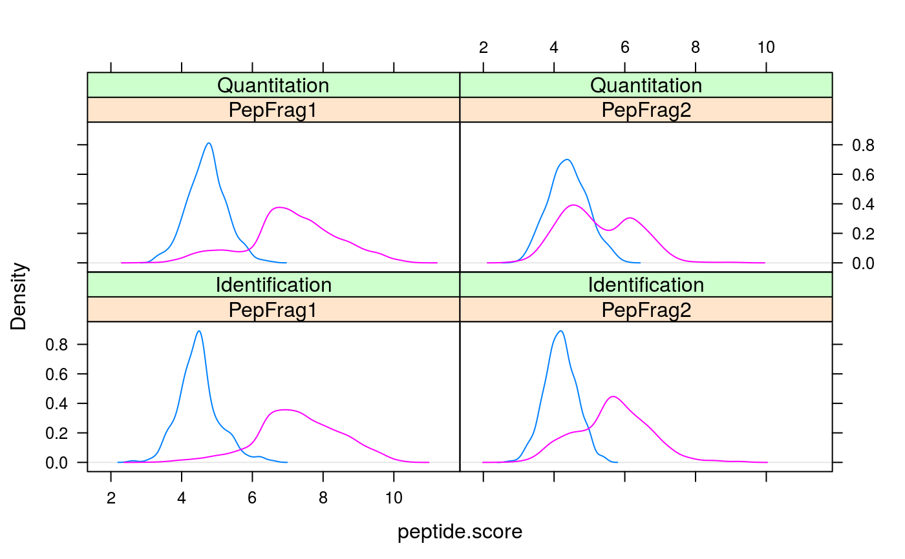getPepNumbers(synapterTiny)#> PepFrag1.Random PepFrag1.Regular PepFrag2.Random PepFrag2.Regular #> ident 256 3522 448 1393 #> quant 496 2664 500 745## filter data filterUniqueDbPeptides(synapterTiny) ## keeps unique proteotypic peptides filterPeptideLength(synapterTiny, l = 7) ## default length is 7 ## visualise before FDR filtering plotFdr(synapterTiny)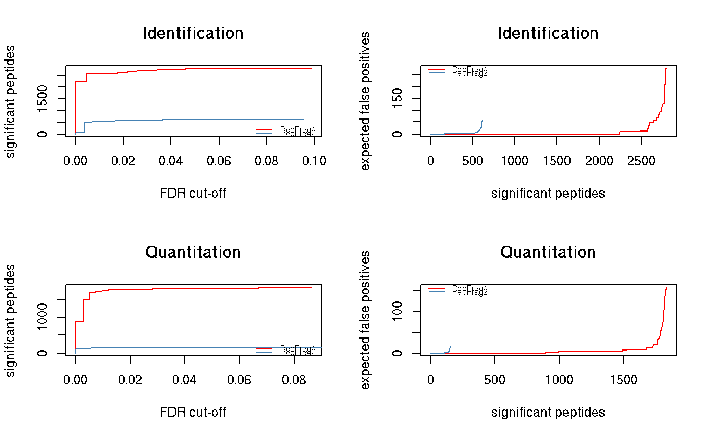setPepScoreFdr(synapterTiny, fdr = 0.01) ## optional filterQuantPepScore(synapterTiny, fdr = 0.01) ## specifying FDR filterIdentPepScore(synapterTiny) ## FDR not specified, using previously set value ## (2.2) Mass tolerance getPpmErrorQs(synapterTiny)#> 25% 50% 75% 90% 91% 92% 93% 94% 95% 96% 97% #> Ident 0.982 2.183 4.070 6.750 7.663 8.299 9.136 9.989 12.060 13.997 16.082 #> Quant 0.432 0.972 1.682 3.083 3.341 3.606 3.992 5.021 5.733 6.455 7.736 #> 98% 99% 100% #> Ident 19.288 22.496 28.664 #> Quant 9.124 14.897 24.599plotPpmError(synapterTiny, what="Ident")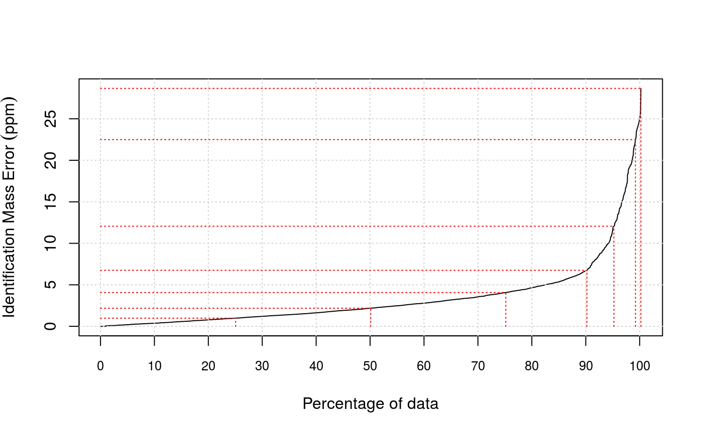plotPpmError(synapterTiny, what="Quant")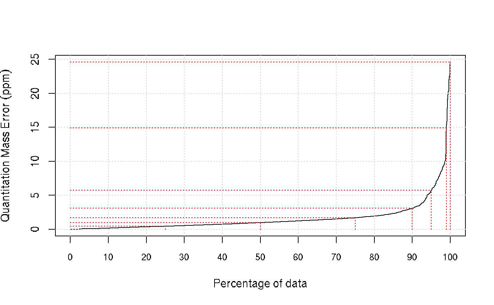setIdentPpmError(synapterTiny, ppm = 20) ## optional filterQuantPpmError(synapterTiny, ppm = 20) ## setQuantPpmError(synapterTiny, ppm = 20) ## set quant ppm threshold below filterIdentPpmError(synapterTiny, ppm=20) filterIdentProtFpr(synapterTiny, fpr = 0.01) filterQuantProtFpr(synapterTiny, fpr = 0.01) getPpmErrorQs(synapterTiny) ## to be compared with previous output#> 25% 50% 75% 90% 91% 92% 93% 94% 95% 96% 97% #> Ident 0.968 2.144 3.939 6.233 6.589 7.035 7.942 8.775 9.523 10.688 12.643 #> Quant 0.431 0.964 1.661 2.973 3.137 3.386 3.702 4.214 5.211 6.095 7.117 #> 98% 99% 100% #> Ident 14.563 17.007 19.744 #> Quant 8.289 9.558 19.817## (3) Merge peptide sequences mergePeptides(synapterTiny) ## (4) Retention time modelling plotRt(synapterTiny, what="data")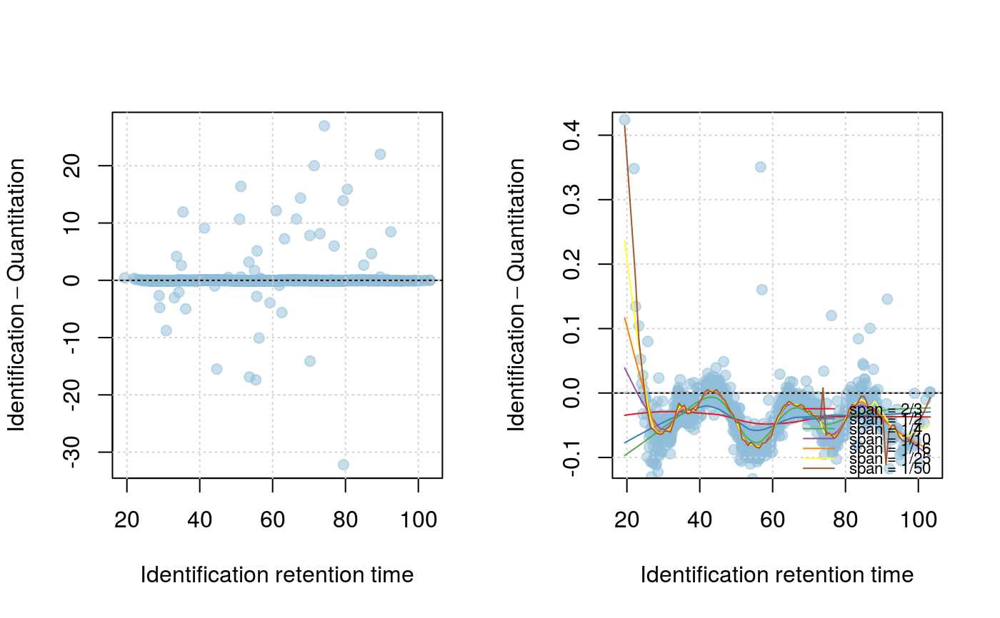setLowessSpan(synapterTiny, 0.05) modelRt(synapterTiny) ## the actual modelling getRtQs(synapterTiny)#> 25% 50% 75% 90% 91% 92% 93% 94% 95% 96% 97% #> 0.003 0.008 0.016 0.029 0.031 0.034 0.040 0.047 0.057 0.072 0.463 #> 98% 99% 100% #> 4.161 10.703 32.140plotRtDiffs(synapterTiny)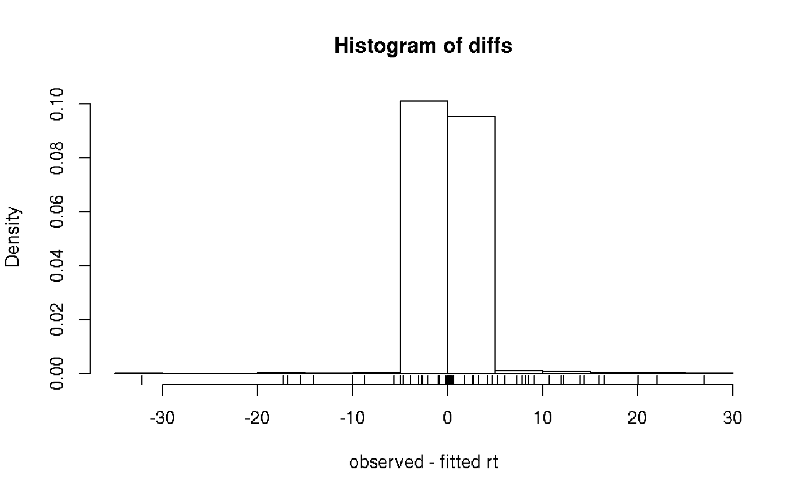## plotRtDiffs(synapterTiny, xlim=c(-1, 1), breaks=500) ## pass parameters to hist() plotRt(synapterTiny, what="model") ## using default nsd 1, 3, 5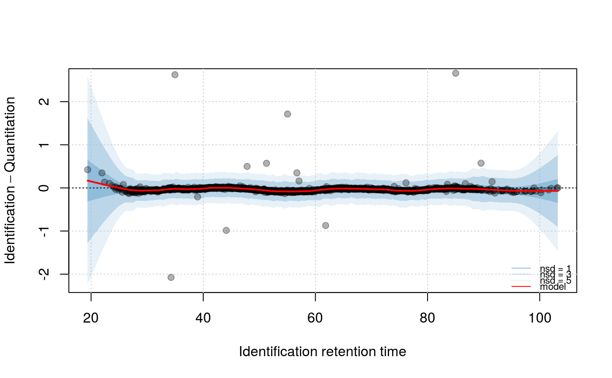plotRt(synapterTiny, what="model", nsd=0.5) ## better focus on model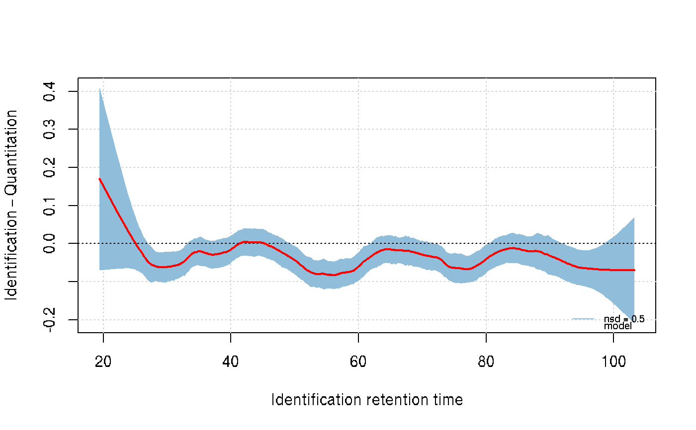plotFeatures(synapterTiny, what="all")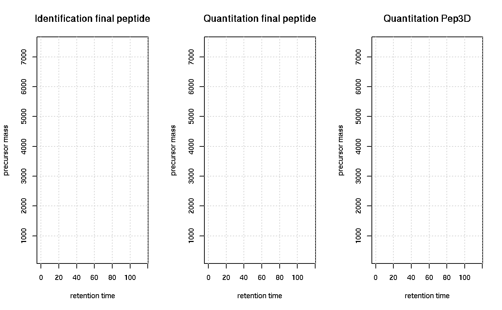setRtNsd(synapterTiny, 3) ## RtNsd and PpmError are used for detailed plot setPpmError(synapterTiny, 10) ## if not set manually, default values are set automatically plotFeatures(synapterTiny, what="some", xlim=c(36,44), ylim=c(1161.4, 1161.7))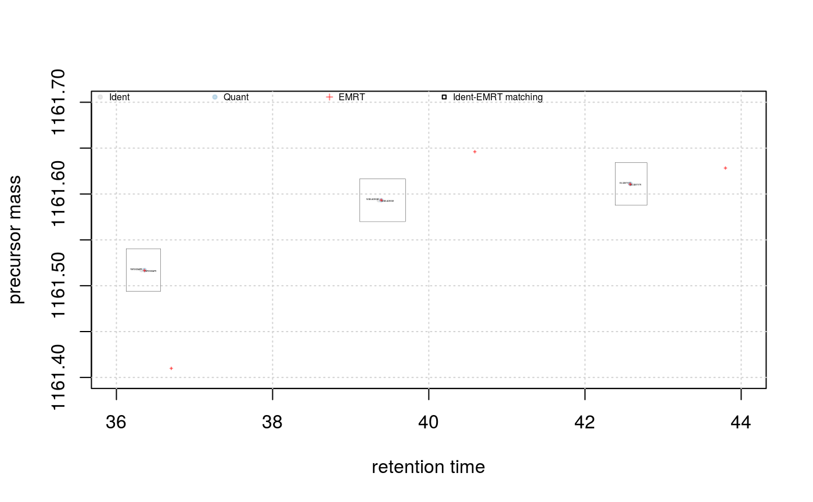## best plotting to svg for zooming set.seed(1) ## only for reproducibility of this example ## (5) Grid search to optimise EMRT matching parameters searchGrid(synapterTiny, ppms = 7:10, ## default values are 5, 7, ..., 20 nsds = 1:3, ## default values are 0.5, 1, ..., 5 subset = 0.2) ## default is 1 ## alternatively, use 'n = 1000' to use exactly ## 1000 randomly selected features for the grid search getGrid(synapterTiny) ## print the grid#> $prcntTotal #> , , Inf #> #> 7 8 9 10 #> 1 0.747 0.755 0.760 0.760 #> 2 0.824 0.833 0.839 0.839 #> 3 0.824 0.833 0.839 0.839 #> #> #> $prcntModel #> , , Inf #> #> 7 8 9 10 #> 1 0.872 0.872 0.872 0.872 #> 2 0.972 0.972 0.972 0.972 #> 3 0.972 0.972 0.972 0.972 #> #> #> $details #> , , Inf #> #> 7 8 9 10 #> 1 0.984 0.984 0.984 0.984 #> 2 0.986 0.986 0.986 0.986 #> 3 0.986 0.986 0.986 0.986 #> #>getGridDetails(synapterTiny) ## grid details#> $`1:7:Inf` #> -2 -1 0 1 2 #> 0 4 33 251 0 #> #> $`1:8:Inf` #> -2 -1 0 1 2 #> 0 4 33 251 0 #> #> $`1:9:Inf` #> -2 -1 0 1 2 #> 0 4 33 251 0 #> #> $`1:10:Inf` #> -2 -1 0 1 2 #> 0 4 33 251 0 #> #> $`2:7:Inf` #> -2 -1 0 1 2 #> 0 4 4 280 0 #> #> $`2:8:Inf` #> -2 -1 0 1 2 #> 0 4 4 280 0 #> #> $`2:9:Inf` #> -2 -1 0 1 2 #> 0 4 4 280 0 #> #> $`2:10:Inf` #> -2 -1 0 1 2 #> 0 4 4 280 0 #> #> $`3:7:Inf` #> -2 -1 0 1 2 #> 0 4 4 280 0 #> #> $`3:8:Inf` #> -2 -1 0 1 2 #> 0 4 4 280 0 #> #> $`3:9:Inf` #> -2 -1 0 1 2 #> 0 4 4 280 0 #> #> $`3:10:Inf` #> -2 -1 0 1 2 #> 0 4 4 280 0 #>plotGrid(synapterTiny, what = "total") ## plot the grid for total matching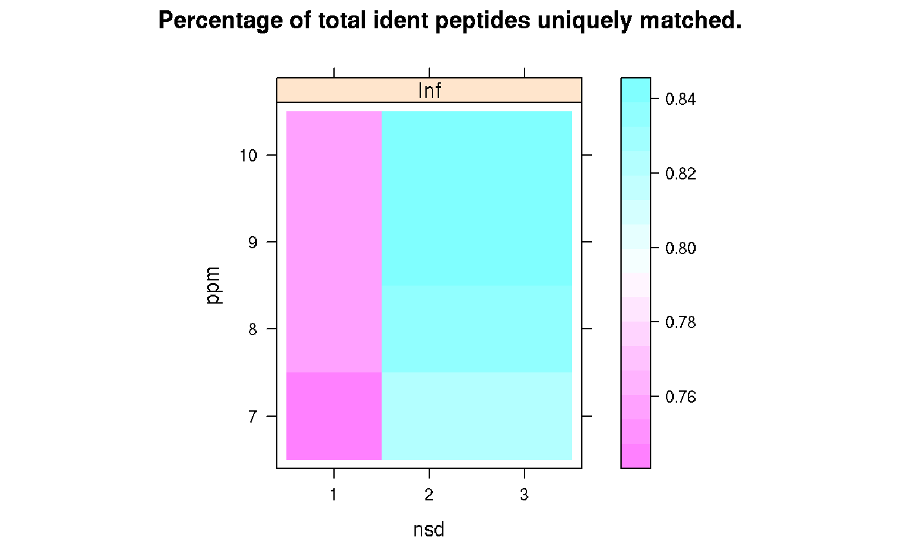plotGrid(synapterTiny, what = "model") ## plot the grid for matched modelled feature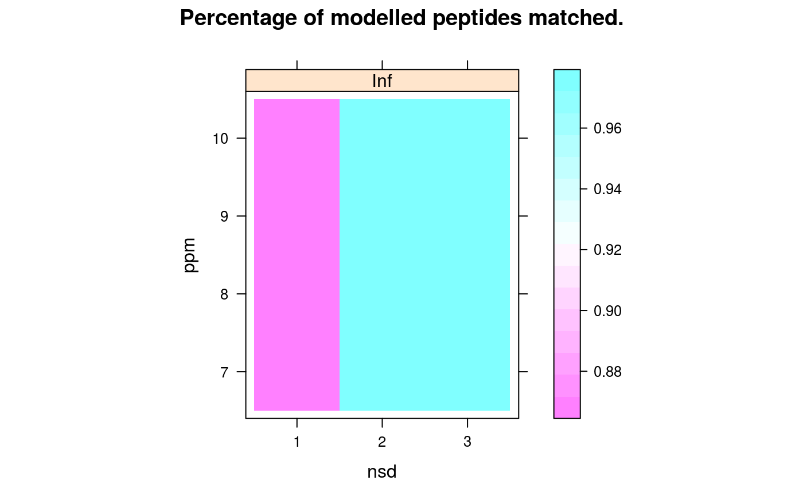plotGrid(synapterTiny, what = "details") ## plot the detail grid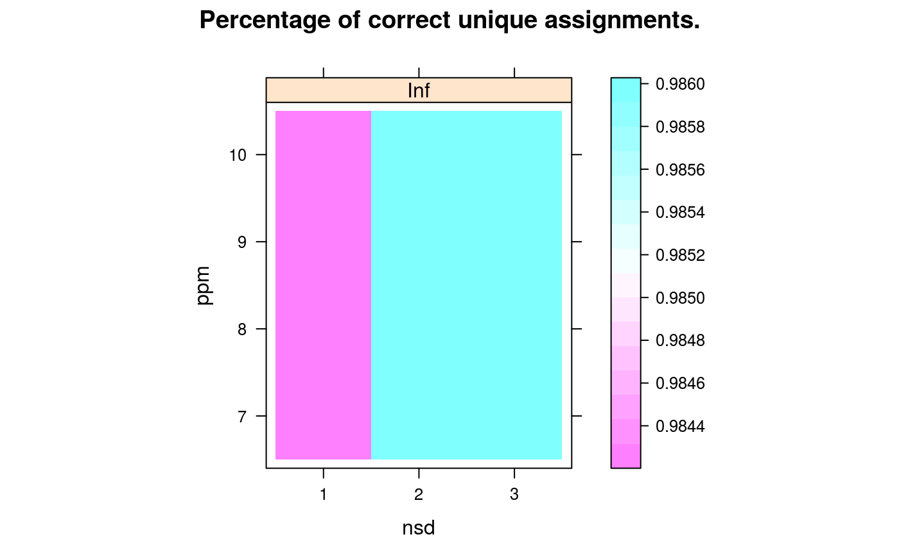getBestGridValue(synapterTiny) ## return best grid values#> prcntTotal prcntModel details #> 0.8390805 0.9722222 0.9859155getBestGridParams(synapterTiny) ## return parameters corresponding to best values#> $prcntTotal #> nsd ppm imdiff #> [1,] 2 9 Inf #> [2,] 3 9 Inf #> [3,] 2 10 Inf #> [4,] 3 10 Inf #> #> $prcntModel #> nsd ppm imdiff #> [1,] 2 7 Inf #> [2,] 3 7 Inf #> [3,] 2 8 Inf #> [4,] 3 8 Inf #> [5,] 2 9 Inf #> [6,] 3 9 Inf #> [7,] 2 10 Inf #> [8,] 3 10 Inf #> #> $details #> nsd ppm imdiff #> [1,] 2 7 Inf #> [2,] 3 7 Inf #> [3,] 2 8 Inf #> [4,] 3 8 Inf #> [5,] 2 9 Inf #> [6,] 3 9 Inf #> [7,] 2 10 Inf #> [8,] 3 10 Inf #>setBestGridParams(synapterTiny, what = "auto") ## sets RtNsd and PpmError according the grid results ## 'what' could also be "model", "total" or "details" ## setPpmError(synapterTiny, 12) ## to manually set values ## setRtNsd(synapterTiny, 2.5) ## (6) Matching ident peptides and quant EMRTs findEMRTs(synapterTiny) plotEMRTtable(synapterTiny)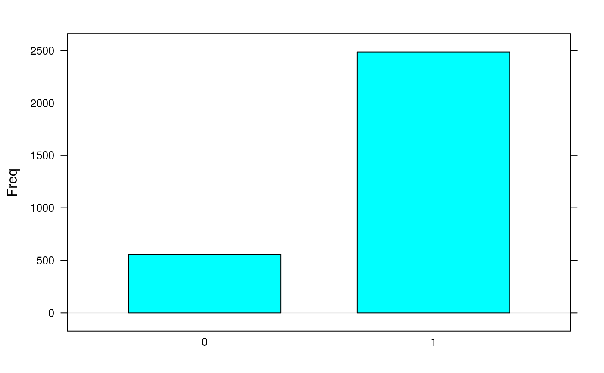getEMRTtable(synapterTiny)#> #> 0 1 #> 559 2486performance(synapterTiny) performance2(synapterTiny) ## (7) Exporting data to csv spreadsheets writeMergedPeptides(synapterTiny) writeMergedPeptides(synapterTiny, file = "myresults.csv") writeMatchedEMRTs(synapterTiny) writeMatchedEMRTs(synapterTiny, file = "myresults2.csv") ## These will export the filter peptide data writeIdentPeptides(synapterTiny, file = "myIdentPeptides.csv") writeQuantPeptides(synapterTiny, file = "myQuantPeptides.csv") ## If used right after loading, the non-filted data will be exported